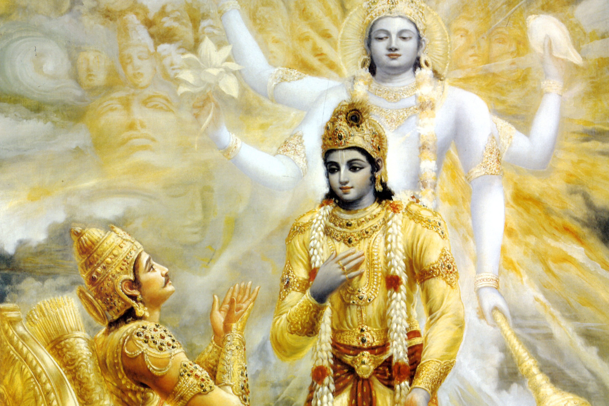

"Bhagawad-gita",the divine song sung by the lord himself.Many knew about Gita and also don't know it.Many still think it as a scripture people read when they get old.Well,however many people have reported a change in their lives just by reading and understanding it.Now,every version of gita we hear is passive ie; passed on from someone to us. We hear it from someone,who has in turn heard it from someone.So, if we go down like this,who are the people who heard the gita from the lord krishna himself?? Well,lets find out.
Many think that in Mahabharatha only two people have heard the gita from krishna.It's not their fault.Modern adaptations of gita show that only 'Arjuna' and 'Sanjaya' gather gita's knowledge from Krishna.But infact there are two more people who have heard the gita.Let's know about them.
1.Arjuna:
Well,he is the reason why we have gita today.Arjuna got carried away at the sight of all his relatives as enemies and at the thought that he had to kill them all to establish dharma.He was filled with doubts as : Would i not incur sin if i kill my own kin?? ; What happiness lies for me after i have successfully killed everyone in my family?? . Krishna cleared all of Arjuna's doubts with the 'Bhagawad Gita' and enlightened him.
2.Sanjaya:
Lord Krishna offered 'divine-sight' to King Dhritarashtra to watch the great war between Kauravas and pandavas.Having recieved the sight from Krishna,dhritharashtra first saw Krishna;His blazing apperance full of light and with extreme pain in his eyes he refused the sight and instead asked Krishna to grant it to his trusted courtesan 'Sanjaya'.Sanjaya would keep the King updated with all the matters of Kurukshetra and thus he was also a very lucky soul to have witnessed the gita from Krishna
Now who were the other two???
3.Hanuman:
If you look closely, you will find an imprint of hanuman on top of Arjuna's chariot.As a matter of fact,all of pandavas' chariots have hanuman hoisted on top of them.This serves as stability to the pandavas and hanuman had promised bheem that he would give strength and stability to his army in this manner.Thus,Hanuman also became a lucky witness for Gita.
It is said that,after the war Krishna asked Arjuna to step out of the chariot first.Unlike all times,Krishna would go first and arjuna would follow.So as soon as Krishna got off the chariot,the chariot turned into ashes.Krishna explained that,this chariot would have been ashes due to all powerful weapons hurled at it,if he and hanuman were not present on it.Such was the strength and stability of hanuman.
4.Barbarika:
Most people will definitely not know of this character of Mahabharatha.Well,Barbarika was the son of Ghatotkach and the grandson of Bheema.He had three powerful arrows which were eternally unstoppable. To know more about him cliclk here .So,barbarika decided that he would fight for the weaker side in the Kurukshetra war.Krishna was aware of these arrows and disguised as a brahmin stopped barbarika who was on his way to Kurukshetra.He then explained to barbarika that the side which he supports will become the winning side due to his arrows . And thus he would have to change side with the weaker side.This will continue and at last you will be the only person left alive.Barbarika realized this and decided not to take part in the war.Then,Krishna asked for charity.Barbarika requested the brahmin to ask anything he desires.The brahmin asked for his head.Barbarika felt that he was no ordinary brahmin and requested him to come to his true form.Krishna then showed barbarika his 'Universal form'(Vishwaroop) and greeted him in the form of krishna.Barbarika now readily offered his head and requested krishna that he wanted to witness the war.So Krishna placed him on a hilltop from where he witnessed the entire war and the gita too......
Found this story interesting?? Let me know......